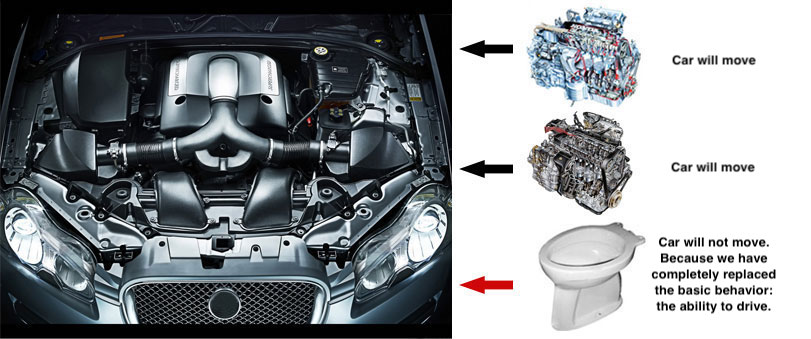

 функции, которые используют базовый тип, должны иметь возможность использовать подтипы базового типа, не зная об этом.
Таким образом, идея Лисков о «подтипе» даёт определение понятия замещения — если S является подтипом T, тогда объекты типа T в программе могут быть замещены объектами типа S без каких-либо изменений желательных свойств этой программы (например, корректность).
Этот принцип является важнейшим критерием для оценки качества принимаемых решений при построении иерархий наследования. Сформулировать его можно в виде простого правила: тип S будет подтипом Т тогда и только тогда, когда каждому объекту oS типа S соответствует некий объект oT типа T таким образом, что для всех программ P, реализованных в терминах T, поведение P не будет меняться, если oT заменить на oS.
Более простыми словами можно сказать, что поведение наследуемых классов не должно противоречить поведению, заданному базовым классом, то есть поведение наследуемых классов должно быть ожидаемым для кода, использующего переменную базового типа.